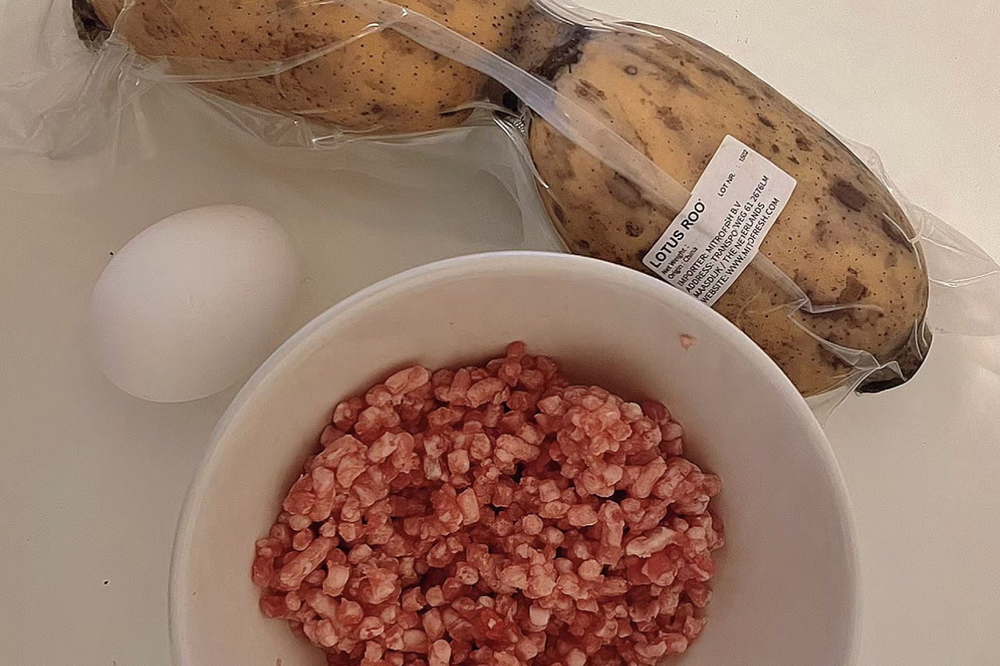
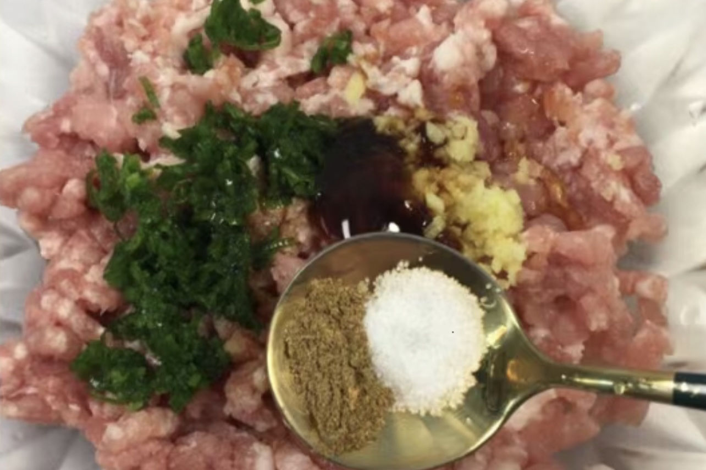
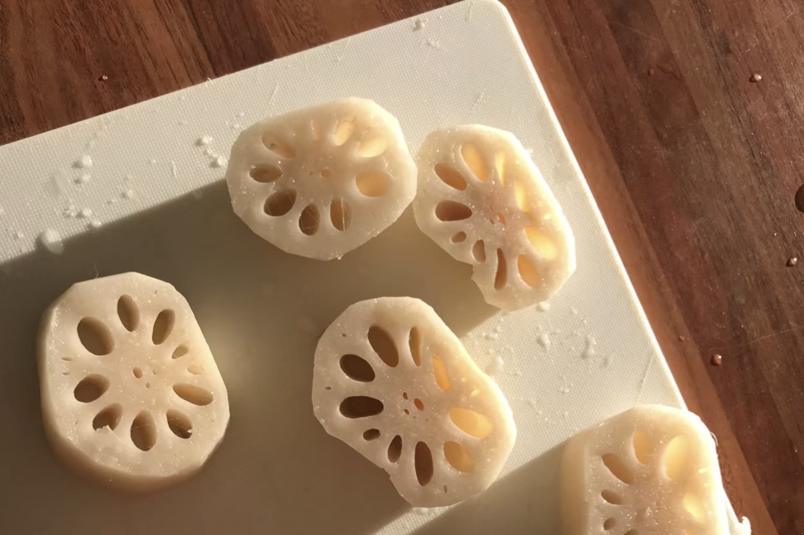
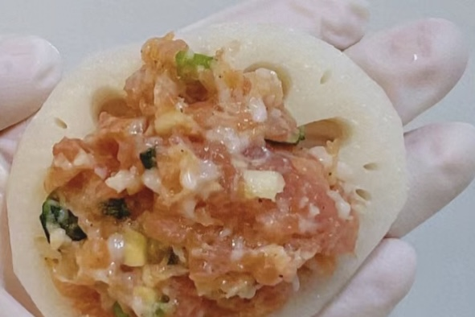

INGREDIENTS
Chili Lotus root, fresh meat, salt, sesame oil, green onion, ginger, batter flour,
starch, cooking oil, salt, egg
Fried Lotus Root Sandwich
fried version
炸藕盒
THIS DISH IS RECOMMENDED BY FAYBEE MO
ried Lotus Root Sandwich is a traditional local specialty of Zhejiang Province, China,
belonging to the Zhejiang cuisine family. It is made from lotus root with meat in the middle,
the outside is covered with batter so it has a crispy texture, while the meat and lotus root
on the inside retains a savory flavor. I had leftover lotus root at home, so faybee passed on
this tutorial to me.

STEP 1: Prepare the lotus root and fresh meat, clean and peel
the lotus root.

STEP 2: Add minced green onion and ginger, soy sauce, sesame oil,
salt, and cornstarch to the meat mixture and mix well clockwise.

STEP 3: Slice the lotus root.

STEP 4: Spread the meat mixture evenly over the lotus root slices.
STEP 5: Top with the other lotus root slice and remove the excess meat mixture.
STEP 6: Put the flour and starch in a bowl in the ratio of 1:1, beat an egg, then
put a little salt and slowly add water and mix it
STEP 7: Next, use chopsticks to slowly let the batter coat the roots.
Then add to the frying oil.
STEP 8: When both sides turn golden brown, you can take them out and eat them.
(2023.10.22)